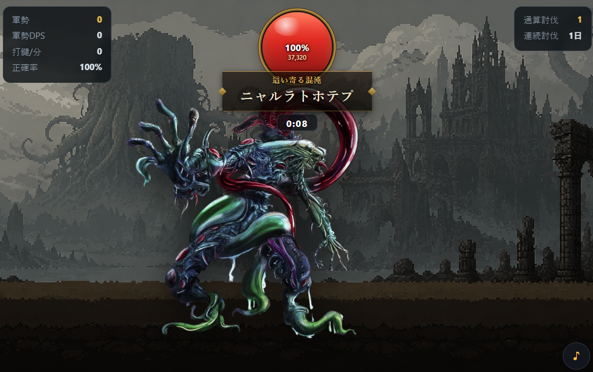

My new browser game, Cthulhu Typing, is live. Every time you finish typing a hiragana word in romaji, one soldier is summoned, and your growing army keeps auto-attacking a boss from the Cthulhu Mythos on its own. It's a typing-meets-summoning battle. It's free, no sign-up, and plays right in the browser on any PC with a physical keyboard (no phones). A single run takes about two to three minutes.
This game is the successor to my earlier Soldier Typing. In this post I want to walk through what I changed for the follow-up and the thinking behind those decisions, from a developer's point of view.

Flipping keystrokes from "attack" to "summon"
Ever since I put out the first game, one thing kept nagging at me. In most typing games, typing equals attacking, which means the moment your hands stop, you're powerless. With that structure, fast typists get a thrill and slow ones just struggle the whole way through. The design only really rewards people who are already good.
So this time I flipped the role of typing itself. What your keystrokes produce isn't damage, it's soldiers. Finish one word and a soldier is summoned; every soldier you've already summoned keeps pounding the boss even while your hands rest. What you type doesn't vanish, it piles up on screen as an asset. That's the feedback loop of an idle clicker, and grafting it onto typing is the core idea of this game.
The main goal of that flip was to make sure even a slow typist can always clear the game. There's no time limit on the kill and no game over. Type at a crawl and your army still steadily grows, the damage accelerates, and the boss always falls in the end. Meanwhile, fast typists get the rush of watching their army balloon in size. Same rules, but I could hand two very different rewards to skilled and struggling players alike, and that's the part of the design I'm happiest with.
The smaller mechanics all serve that same principle. Longer words summon stronger soldiers (a two-character word gets you a villager; a five-character one calls up dragon-, angel-, or paladin-class troops). Type five words in a row with no misses and an extra ally joins the fight. Once you pass 40 soldiers, units start merging into "x2, x3..." giants. Every one of these exists to reinforce the feeling that the more you type, the more your army grows.
Why the boss is a single "daily" pick
The other big decision was how bosses appear. I built 43 gods and creatures from the Cthulhu Mythos. I could have unlocked all of them at once and let players tackle any they liked, but I deliberately went with one boss per day, and everyone in the world faces the same one. If Cthulhu is up today, Cthulhu is on every player's screen. Beat it and you've cleared the day; at midnight Japan time, the next boss and a fresh word list rotate in.
The aim was to make this not a game you sink hours into, but a habit game you play once a day for two or three minutes. Solo-made browser games tend to be "clear it once and you're done." I'd much rather have people drop by each day just to see "which god is it today." Everyone facing the same boss matters too: it creates a shared talking point ("isn't today's guy kind of tanky?"), and it puts the leaderboard on level ground.
The way your army assembles also changes from boss to boss. Face a boss head-on and your troops pincer it from both sides. It's a small pleasure, watching the picture shift each day.
The score formula: typing speed x accuracy x boss strength
The daily-boss system has one side effect. Some bosses are strong and some are weak, so if you simply competed on raw damage or clear time, whoever happened to play on an easy day would have a lopsided advantage. Since I'm posting a daily leaderboard that resets every day, I couldn't let that slide.
So the score is typing speed x accuracy x boss strength. On a tough-boss day the boss-strength coefficient is larger, so no matter which day you play, you're competing purely on the quality of your typing. There's a second intention too: because accuracy is a multiplier, misses hit your score directly. Typing fast and sloppy loses to typing cleanly. Viewed as typing practice, the way of typing that does you the most good is also the way that scores the most.
For the leaderboard, you just enter a name and play, and your best score of the day is posted automatically. No registration. Alongside the daily ranking there's an all-time leaderboard for total bosses defeated, so if you're the steady, chip-away type, that one's for you.
A quiet detail I cared about: no IME toggling
One last thing that never shows up on screen. In this game, romaji keystrokes register even with Japanese input (IME) left on. The usual typing-game hassle of "please switch your IME off before you start" was something I'd flagged in the previous game and kept feeling bothered by. Browser games are great precisely because you can play the instant the urge strikes, so making people fiddle with settings at the door felt like a waste. This time the game reads keystrokes directly, so that friction is gone.
Note that play records are saved in your browser (localStorage), so they don't carry over to other devices or private-browsing windows. Play from your usual browser and you'll be fine.
Give today's boss a try
The play loop is simple. Finish typing a hiragana word in romaji, a soldier appears, the soldier fights on its own. That's it. Fast typists can chase the top of the leaderboard; slower players can enjoy a kill at their own pace. And honestly, I just want you to see the sheer absurdity of unspeakable elder gods getting swarmed by a mob of villagers and paladins at least once.
▶ Take on today's boss in Cthulhu Typing
If you like it, check out the earlier Soldier Typing and the snappy, rhythm-friendly Popcorn Typing too.